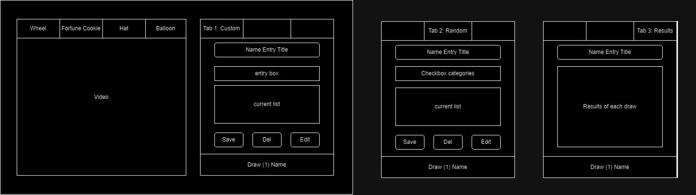
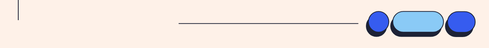

Name Generator
Overview
In the class CIS 440: Computer Information Systems Capstone, students were split into teams and were to complete a project using agile/scrum methodology. During the 8 weeks of this project, students must fulfill their assigned scrum role, create 10 user stories complete weekly check ins, build a system from scratch connected to the front end and back end from start to finish, and do a final presentation.
Our group chose to build a Random Name Generator. This project contained the capability to create an account, log in with a pre-existing account, save the names to the account, edit any names that were entered, delete any name lists, and choose from many fun and creative options to draw the names.
Tools
Based on the overview, we concluded on using the tools:
- HTML
- CSS
- JavaScript
- MongoDB
- Replit
- Trello
Team
In our team of 5 using agile/scrum methodology, we organized ourselves into these roles:
- 1 Product Owner
- 1 Scrum Master
- 3 Developers
My Role
As a developer, my role contained the following:
- Creating wireframes for the UI design of the website
- Presenting the diagrams to the product owner for approval
- Building the front end of the website using responsive web design
- Attending meetings to track the progress of the project and presenting my work
- Communicating with all team members
User Stories
While working out the specific details of what the project will contain and the aspects of working on it, we created 10 user stories that describe features of the software from the perspective of the end user. Each story also contains a point value and at least three criteria to meet in order to be marked as done.
- 1 Point As a user, I'd like to enter my own names/options, because that is why I am using the site
- Text box for entering name/options
- Entry added to list after saving
- Option to create new entry after saving
- 1 Point As a user, I'd like to delete my own names/options, because that selection may not be valid anymore
- Delete button near entry
- "Are you sure you'd like to delete __?" popup
- Entry is deleted from list
- 1 Point As a user, I would like to save names that I like so I can look back on them
- A heart button on the names when they are pulled out of the hat
- Store the favorites names and place them in a folder on the site
- Able to un-heart a name if the user no longer wants it favorited
- 1 Point As a user, I'd like to select a number range of randomized names, because I may want more or less options
- Able to access database with stored names or words for username creation
- Able to use entry box to determine how many names are pulled (range 2-30)
- Able to select a name or username using random probability when button is clicked
- 2 Points As a user, I'd like to edit my own names/options, because I may make a spelling error the first time
- Edit button near entry
- Text box with old text entry can be typed on
- Save option updates old spelling with new spelling
- 2 Points As an admin, I'd like to create a filtration system in the names/options entries, because I want to increase cybersecurity safety
- Textbox does not allow intricate code
- Textbox does not allow intricate code
- Anything in textbox is not applied until saved
- 3 Points As a user, I'd like to have the option to have multiple names/options selected, because my situation requires more than one selection
- Have setting/gears option
- Have selection number default 1
- Have selection number options go up to the total number of names/options minus 1
- 3 Points As a user, I'd like to use the names/options I've entered on a different game of selection (wheel, balloons, etc.), because I want to try them all out
- Thumbnail options for each selection game
- Each game uses same list of names/options automatically
- History of each chosen result saved
- 3 PointsAs a user, I'd like to click a button to redo a name selection, because I may not like my results and want to pull names again
- Able to click button and perform redo
- Clicking button should clear previous results
- Able to access database and pull new names when button is clicked
- 5 Points As a user, I would like to use a checkbox to determine the type of random names I want to pull, because I may be looking for a specific type of names (ex. Masculine names for choosing baby name; Colors as part of a username creation)
- Able to access database with stored names or words for username creation
- Able to use checkbox to determine what type of names are pulled
- Able to display the pulled name to the user
- 8 Points As a user, I would like to pull a random name from an established dataset, because I don't want to insert my own names or usernames
- Able to access database with stored names or words for username creation
- Able to select a name or username using random probability when button is clicked
- Able to display the pulled name to the user
Wireframe
The next step in the process of creating the name generator was to design the front end. In order to do this, I brainstormed some ideas then created a wireframe of the page. Upon presentation of this diagram, I got approval from the other team members and could then work on implementing the design with code. This wireframe was created on Diagrams.net for clear reliability and consistency.
Problem
Due to the quick turnaround of this project and the busy schedules of each team member, we were very quickly falling behind on our schedule. Additionally, many user stories that we had assigned low point values to ended up taking up much more time and effort than we accounted for. Despite the weekly progress reports and multiple team meetings surrounding what user stories were to get done that sprint, we instead ended up focusing on aspects such as building the front end, connecting the back end to the front end, and creating the database, all of which were fundamental parts of the project yet did not have user stories directly attached to them.
Solution
An unfortunate but necessary solution to this problem was to cut out unnecessary features of the project. Doing this allowed the developers the time they needed to build a reliable foundation for the program instead of having many unfinished features. This also explains why the user stories and wireframe includes a way to pull from a list of auto generated random names that did not make it into the final version.
Results
See below for the final result of this project. Including: Screenshots of the project.
The slides for the presentation can also be viewed here.
Next Steps
While this project has concluded, next steps I would have taken if allotted extra time is to add the aspects that were cut out and improve the design. While I'm proud of the work my group has done in creating a fully functional program with front end, back end, and a database in a short amount of time, the actual experience for the end user is quite limited.
The most vital aspect to add to the program that was cut out was the capability to pull a list of random names of specific categories and have the program choose a random name from that category. This could be used by users in simple examples such as choosing a baby name from a list of masculine names, or choosing something to draw from a list of animals. This aspect would have set our program even further apart from other name generator websites, to go along with original features we already have such as the signing in capabilities and different selection options than spinning a wheel.
The design of the website itself is relatively good in ways that all the information is organized in an easily digestible way with tabs that can clicked be on to display different areas of the website, and since all the information was displayed in these tabs it is responsive with any size of screen. However, a few things could easily be improved. The first is the placement of the name that has been drawn. As a group we tried to place the result to where it correlated with the type of name generation option that was chosen, but sometimes the layout of that looked a little off and some adjustments to the font, sizing, color, and background color, could've achieved a much more seamless and attention grabbing look. The second thing that could have been improved was the wheel itself. The wheel was built with code to be able to spin it accurately and have it adjust as the page is resized. However, in this process there were small gaps left between the colors that we were not able to debug and fix in time that really take away from the professional look and feel of the project.
Learnings
Overall, this project taught me about working in a team using agile/scrum methodology, and connecting front end and back end code with a database. This project also taught me the importance of time management, and how essential it is to plan ahead with specific details to allow more of a safety net if anything goes wrong. Though I have had previous experience and knowledge with agile/scrum through a pervious internship, it was a new experience to work on a project from start to finish with these principles. It was very educational to engage in stand up meetings, have different responsibilities based on each team member's roles, engage in check in meetings, and build one program as a group. The name generator project containing everything outlined above earned a score of 100%, further displaying the application of these concepts and practices.
